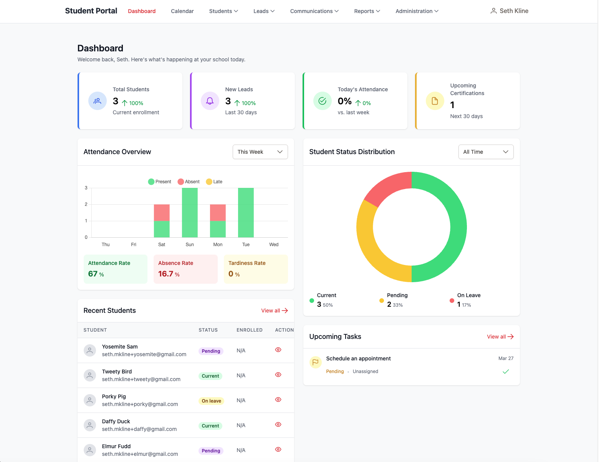
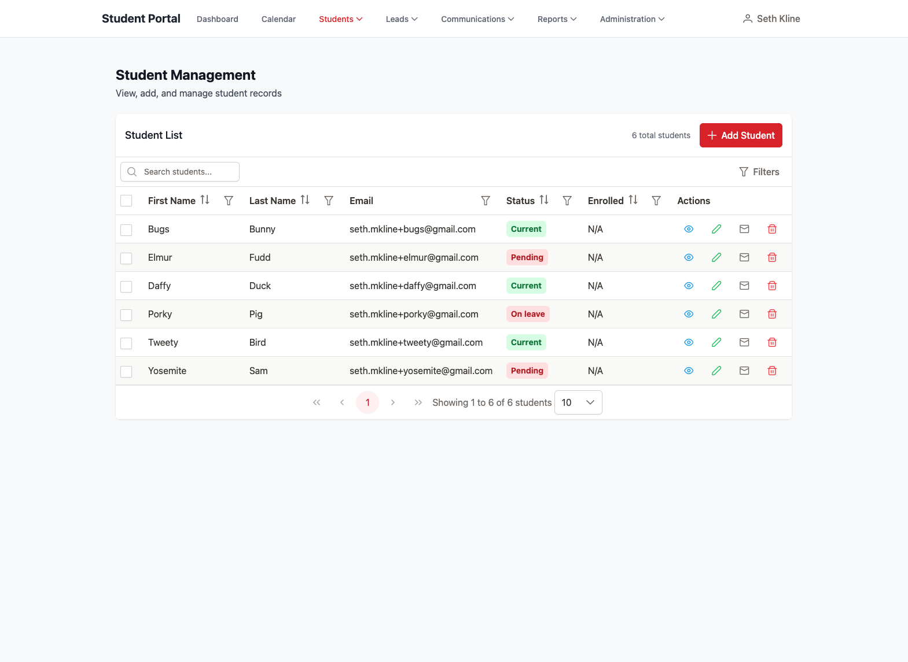
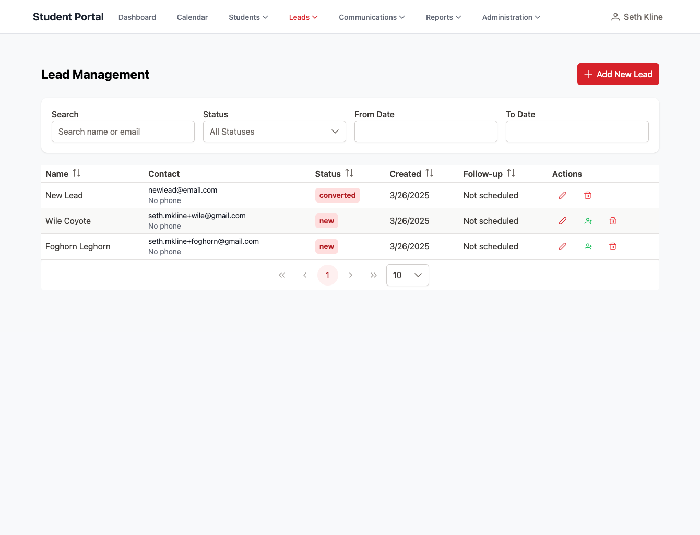
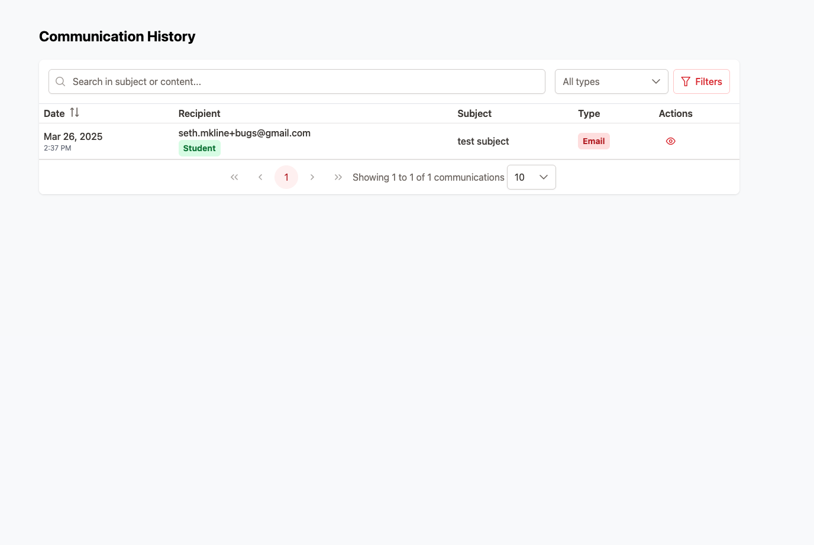
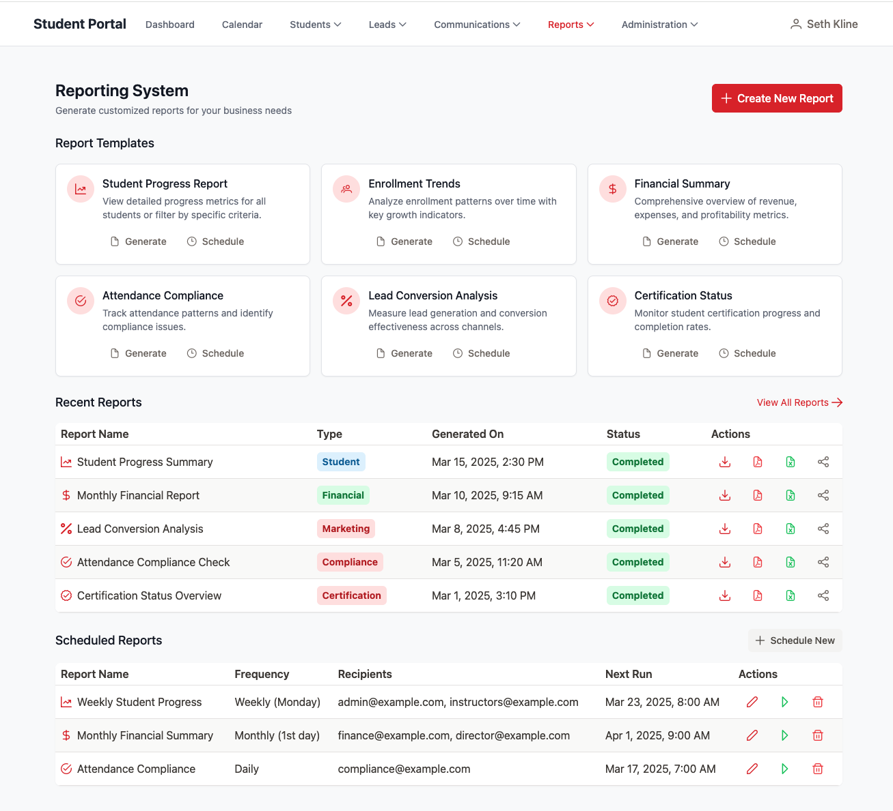

Project Overview
The Barber School Management System is a full-featured web application that digitizes and streamlines all aspects of barber school operations. This system replaces multiple disconnected tools with a single, cohesive platform that manages the entire student lifecycle, from initial lead to graduation and beyond.
As the solo developer on this project, I was responsible for the entire process - from requirements gathering and system design to front-end implementation, back-end architecture, and deployment.
Tech Stack
Frontend
- Vue 3 with Composition API
- Nuxt 3 for server-side rendering
- PrimeVue for UI components
- TailwindCSS for custom styling
- Chart.js for data visualization
Backend
- Supabase (PostgreSQL)
- RESTful API architecture
- Supabase for authentication
- Nuxt Server Routes for API endpoints
Development Tools
- TypeScript for type safety
- Storybook for component documentation
- Git for version control
- Vercel for deployment
Key Features
Interactive Dashboard
Designed an information-rich dashboard with real-time metrics, upcoming tasks, and student status distribution. The dashboard provides immediate insights into school operations, attendance trends, and student progress through interactive charts and data visualizations.

Complete Student Management
Implemented a comprehensive student tracking system that follows the entire student journey, from enrollment to graduation. Features include:
- Student profiles with contact information and progress tracking
- Attendance tracking with clock-in/clock-out functionality
- Assessment grading with performance analytics
- Certification management with expiration alerts
- Hour tracking for program completion requirements
- Document management with secure storage

Lead Management System
Created a robust lead tracking system to help increase enrollment. The system includes:
- Lead capture and qualification
- Follow-up task scheduling
- Conversion tracking from lead to enrolled student
- Communication history logging

Communication Tools
Developed a comprehensive communication suite for staying connected with students and leads:
- Customizable email templates with variable support
- Bulk email capabilities for announcements
- Communication history tracking
- Automated notifications for certifications and important dates

Administrative Functions
Built powerful admin tools for school management:
- User management with role-based permissions
- Reporting tools with customizable parameters
- Analytics dashboards for business insights
- System settings and configuration options

Development Process
The project was developed using an iterative approach with regular client feedback:
- Requirements Gathering: Conducted detailed interviews with school staff to understand their workflow and pain points
- System Architecture: Designed a scalable database schema and component structure
- Component Library: Developed reusable UI components documented with Storybook
- Feature Implementation: Built out functionality in phases, starting with core student management
- Testing & Refinement: Conducted user testing and refined interfaces based on feedback
- Deployment: Set up hosting environment with proper security measures
Technical Challenges & Solutions
Complex Data Relationships
Challenge: Managing the intricate relationships between students, assessments, attendance records, and certifications.
Solution: Implemented a well-structured database schema with foreign key relationships and type-safe database interactions using TypeScript interfaces that mirror the Supabase schema.
Results & Business Impact
The completed solution has not been used by the client yet I'm really excited for them to use it and to see how it impacts their business:
Conclusion & Key Learnings
This project demonstrated my ability to design and implement a complete full-stack application that solves real business problems. Throughout the development process, I gained valuable experience in:
- Building scalable Vue applications with the Composition API
- Designing efficient database schemas for complex domain models
- Creating intuitive UIs for diverse user roles with varying technical expertise
- Deploying and maintaining a production web application
Video Demonstrations
Watch walkthroughs of key system features:
Link to Github Repo
Back to Projects